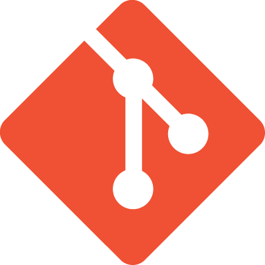

flowchart LR
subgraph wd["Working Directory"]
A["Files you<br>edit and save"]
end
subgraph sa["Staging Area"]
B["Changes selected<br>for your next commit"]
end
subgraph repo["Repository"]
C["Permanent history<br>of snapshots"]
end
A -- "git add" --> B -- "git commit" --> C
Git fundamentals
Version control
Track changes to your files with Git: initialize a repository, stage changes, commit snapshots, and review your project’s history.
Overview
Git is a version control system that records changes to your files over time. Instead of saving multiple copies of a file (report_v1.txt, report_v2_final.txt, report_v2_final_FINAL.txt), Git lets you save snapshots, called commits, that you can revisit, compare, or restore at any time. This tutorial covers the core Git workflow: initializing a repository, staging changes, committing, and reviewing history.
Adding a Git repository to your project allows you to track changes to your project at checkpoints. This will allow you to easily revert to a previous state if something goes wrong, or to compare different versions of your project as you iterate. Claude Code also has built-in support for checkpointing your project, however, it is not a substitute for Git.
Note: Git and GitHub are not the same thing. Git is the version control system that runs on your computer, while GitHub is a web-based platform for hosting Git repositories and collaborating with others (among others Codeberg, GitLab, etc). This tutorial focuses on Git itself; we’ll cover web repositorys and collaboration in a future tutorial.

Prerequisites: Shell configuration
What is version control?
As alluded to in the overview, there is an inherent problem when working with projects in which files and directories are changing over time; how do you keep track of those changes? One common approach is to save multiple versions of a file with different names. However, these, as you know, leads to all sorts of confusion, for yourself and even more so for collaborators.
Furthermore, when working with a tool, such as Claude Code, that allows you to iterate on a project by making changes to files and directories across your project, it can be difficult to keep track of those changes –even if you wanted to– without a version control system.
A version control system, like Git, allows you to address both issues: 1) it provides a structured way to track changes to your files over time (without renaming them), and 2) it allows you to easily revert to a previous state of your project (or parts of it) if something goes wrong, or to compare different versions of your project as you iterate.
There’s some overhead to learning Git, but the benefits are well worth it. Once you get the hang of it, you’ll wonder how you ever managed without it.
Installing Git
Many modern operating systems come with Git pre-installed. Check with git --version. However, these versions can be outdated. To get the latest version, use Homebrew1:
brew install git
Tip
If you ran the workgroup setup script, Git is already configured. Check with git config --list.
Configuring Git
Before you start using Git, you need to configure it with your name and email, at least. This information is used to identify the author of your commits. While we are at it, we can also set the default branch name to main, which is the modern convention (do not worry about branches for now, this is a more advanced topic).
From the terminal, run the following commands, replacing the name and email with your own:
git config --global user.name "Your Name"
git config --global user.email "you@example.com"
git config --global init.defaultBranch mainGood news, you only need to do this once for a given machine! Git will save this information in a configuration file on your computer, so you won’t have to set it again for future projects. You can verify that your configuration is set up correctly with:
git config global --listVerify that your name, email, and default branch name are listed in the output.
Creating a repository
Now we are ready to create Git repositories for our projects. A Git repository is a special directory that contains all the information about the history of your project, including the commits, branches, and configuration. You can create a Git repository in any directory by running git init in that directory.
cd path/to/your/project
git initThis command creates a hidden directory called .git/ in your project directory. This is where Git stores all the information about your repository, including the commits, branches, and project-specific configuration. You can see this directory with ls -a, but you should not modify anything inside it directly.
Once you have initialized a Git repository, Git will start tracking changes to your files. However, it won’t automatically log those changes as commits. That’s our next step: staging and committing changes.
The staging area
Git uses a three-zone model to manage changes to your files:
- Working directory: This is where you make changes to your files. It’s the actual files and directories you see in your project.
- Staging area (index): This is an intermediate area where you can stage changes that you want to include in your next commit. You can think of it as a “to-do list” for your next commit.
- Repository: This is where Git stores the history of your commits. When you commit changes, Git takes a snapshot of the staged changes and saves it in the repository.
Here is the flow:
The core workflow
In Figure 1, we see the overview of the core Git workflow: you make changes to your files in the working directory, then you stage the changes you want to include in your next commit, and finally, you commit those staged changes to the repository. Let’s go through each step in more detail.
To do so we will use the following example:
Here is what this looks like with actual files:
flowchart LR
subgraph wd["Working Directory"]
direction TB
w1["notes.txt<br><i>modified</i>"]
w2["report.qmd<br><i>modified</i>"]
w3["scratch.txt<br><i>modified</i>"]
w4["data.csv<br><i>untracked</i>"]
w5["results.csv<br><i>unmodified</i>"]
end
style w5 stroke-dasharray: 5 5
subgraph sa["Staging Area"]
direction TB
s1["notes.txt<br><i>staged</i>"]
s2["report.qmd<br><i>staged</i>"]
s3["scratch.txt<br><i>not staged</i>"]
s4["data.csv<br><i>staged</i>"]
end
subgraph repo["Repository"]
C["Commit:<br><i>'Update notes and report'</i>"]
end
w1 -- "git add" --> s1
w2 -- "git add" --> s2
w3 --> s3
w4 -- "git add" --> s4
s1 --> repo
s2 -- "git commit" --> repo
s4 --> repo
Checking status (git status)
What the status output tells you: untracked, modified, staged.
Adding files to staging (git add)
Staging specific files vs staging everything. Why git add . needs care.
Committing a snapshot (git commit)
Writing a good commit message. The -m flag.
git add file.txt
git commit -m "Add initial draft of file"Viewing history (git log)
Reading the log. Useful flags: --oneline, --graph.
Comparing changes (git diff)
Seeing what changed before committing. Staged vs unstaged diffs.
Undoing mistakes
Unstaging a file (git restore --staged)
Removing a file from the staging area without losing changes.
Discarding changes (git restore)
Reverting a file to its last committed state.
Reverting a commit (git revert)
Creating a new commit that undoes a previous one (safe for shared history).
Warning
git restore discards uncommitted changes permanently. Make sure you want to lose those edits before running it.
Ignoring files (.gitignore)
What .gitignore does. Common patterns: OS files (.DS_Store), editor files, build artifacts. Creating a .gitignore file.
Practice exercise
A guided exercise: create a small project, make several commits, view the log, and undo a change.
Summary
Table of core Git commands: init, status, add, commit, log, diff, restore, revert. Link to next tutorial.
Next tutorial: GitHub collaboration
Footnotes
If you don’t have Homebrew installed, see the CLI fundamentals for instructions.↩︎